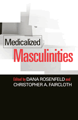

<body bgcolor="#FFFFFF" text="#000000" link="#0000FF" vlink="#CC0000" alink="#CC0000"><center><hr width="350" size="1" align="center" noshade>The first book to examine the male body in relation to the sociology of health and gender<hr width="350" size="1" align="center" noshade><p><a href="https://cdcshoppingcart.uchicago.edu/Cart/ChicagoBook.aspx?ISBN=9781592130979&&PRESS=temple" target="_top">Buy this book!</a> | <a href="https://cdcshoppingcart.uchicago.edu/Cart/Cart.aspx?PRESS=temple" target="_top">View Cart</a> | <a href="https://cdcshoppingcart.uchicago.edu/Cart/Cart.aspx?PRESS=temple" target="_top">Check Out</a></p><p></p></center><!--none//--><h1>Medicalized Masculinities</h1>
<h3>edited by Dana Rosenfeld and Christopher A. Faircloth</h3>
<P>cloth 1-59213-097-6 $85.50, Feb 06, <FONT COLOR=#990033>Available</FONT>
<br>paper 1-59213-098-4 $31.95, Feb 06, <FONT COLOR=#990033>Available</FONT>
<br>Electronic Book 1-4399-0457-x $31.95 <FONT COLOR=#990033>Available</FONT>
<BR> 272 pp
6x9
4&nbsp;tables 3&nbsp;figures 7&nbsp;halftones
</P><BLOCKQUOTE><I>"</i>Medicalized Masculinities<i> is a most timely and valuable contribution! It addresses the gap in studies of medicalization of men's bodies and lives&#151key new sites of commodification, consumption, and technologies of enhancement. Interesting case studies demonstrate how medicalization increasingly occurs when performances of appropriate masculinities fail&#151in schools (Attention Deficit Hyperactivity Disorder), in the military (Post-Traumatic Stress Disorder), and in bed (Erectile Dysfunction)."</i>
<br>&#151<b>Adele E. Clarke</b>, Professor of Sociology, Adjunct Professor of History of Health Sciences, Department of Social and Behavioral Sciences, University of California, San Francisco<i></I></BLOCKQUOTE>
<p>When medicalization&#151the characterization of human traits in terms of disease and ailment&#151first appeared as a concept in the 1970s, most social science gender scholarship focused on female or genderless bodies. The work on men, health, and medicine was scant and tended to depict masculinity as intrinsically damaging to men's health.
<p><i>Medicalized Masculinities</i> considers how these threads in scholarship failed to consider the male body adequately and presents cutting-edge research into the definition and regulation of masculinity by medicine. Renowned health and gender studies experts examine medicalized conditions such as balding, aging, and other dimensions of the life cycle in the tradition of the sociology of health and gender.
<BR>&nbsp;<h2>Excerpt</h2><P>Excerpt available at <a href="http://www.temple.edu/tempress">www.temple.edu/tempress</a></p>
<BR>&nbsp;<h2>Reviews</h2>
<p><i>"This anthology outlines the reason for the neglect of the medicalization of men's health in the past and for the theory and policy relevance of a gender analysis of this topic today. It is a ground-breaking volume with a solid theoretical focus and a broad range of empirical studies on the topic of medicalized masculinities."</i>
<br>&#151<b>Elianne Riska</b>, Professor of Sociology, University of Helsinki, Finland
<p><i>"</i>Medicalized Masculinities<i> is an excellent beginning to the development of a critical perspective on medicalization's impact on male individuals in modern societies."</i>
<br>&#151;<b><i>The Journal of the American Medical Association</i></b>
<p><i>"The work is well structured, well written, and fulfils [sic] its stated aims."</i>
<br>&#151;<b><i>Sociology of Health & Illness: A Journal of Medical Sociology</i></b>
<p><i>"[A] creative grouping of investigative areas usually isolated in journals on gender, health, or cultural studies. There is a useful Introduction by the editors framing the general literature on the sociology of the male body."</i>
<br>&#151;<b><i>Canadian Journal of Sociology Online</i></b>
<p><i>"[T]he contributions are clearly written and well argued. The editors have done a good job in producing an even and accessible introduction to the medicalization of masculinity, and have provided ample references to classical works and current research. Medicalized Masculinities will be a valuable reference work for postgraduate health related courses. It will be of interest to health sociologists, but should be read by anyone with an interest in gender issues in health care, as well as by health practitioners in the specific areas addressed."</i><br>&#151;<b><i>Metapsychology Online</i></b>
<p><i>"</i>[A]n excellent starting point for those who wish to gain additional perspectives on the use of medicine as an agent of social control for defining and regulating masculinities."</i>
<br>&#151;<b><i>Gender and Society</i></b>
<p><i>"[A]n excellent collection that will be required reading for scholars interested in gender and health. Its clear and lively writing, the wealth of background information in the introduction, and its contributors’ compelling identification and analysis of key sites for the medicalization of masculinity in American today make it a pivotal addition to the fields of medicalization and gender research. Its accessibility and topicality will also make it an excellent teaching resource."</i>
<br>&#151;<b><i>Archives of Sexual Behavior</i></b>
<BR>&nbsp;<h2>Contents</h2><P>
<p>Acknowledgments
<br>Introduction Medicalized Masculinities: The Missing Link? &#150 Dana Rosenfeld and Christopher A. Faircloth
<br>1. The Viagra Blues: Embracing or Resisting the Viagra Body &#150 Meika Loe
<br>2. Sex the Natural Way: The Marketing of Cialis and Levitra &#150 Chris Wienke
<br>3. The Leaky Male Body: Forensics and the Construction of the Sexual Suspect &#150 Lisa Jean Moore and Heidi Durkin
<br>4. Medicalizing the Aging Male Body: Andropause and Baldness &#150 Julia E. Szymczak and Peter Conrad
<br>5. Dissecting Medicine: Gender Biases in the Discourses and Practices of Medical Anatomy &#150 Alan Petersen and Sam Regan de Bere
<br>6. Making the Grade: The Gender Gap, ADHD, and the Medicalization of Boyhood &#150 Nicky Hart with Noah Grand and Kevin Riley
<br>7. The Sexual Savage: Race Science and the Medicalization of Black Masculinity &#150 Ann Marie Hickey
<br>8. Medicalizing Military Masculinity: Reconstructing the War Veteran in PTSD Therapy &#150 Marisa M. Smith
<br>Notes
<br>References
<br>About the Contributors
<br>Index
</P><BR>&nbsp;<H2>About the Author(s)</H2>
<table><tr><td valign="top"><img src="/tempress/authors/1757_au1.gif" height="90" width="75"></td><td width="100%" valign="middle"><p><b>Dana Rosenfeld</b> is Lecturer in the Department of Health and Social Care, Royal Holloway, University of London, and the author of <i><a href="1585_reg.html" target="_top">The Changing of the Guard: Lesbian and Gay Elders, Identity, and Social Change</a></i> (Temple). Her interests include the medical and lay interpretation, management and regulation of the body, the experience of embodiment in ill health and old age, and identity in historical and interactional context.</P></td></tr></table><table><tr><td valign="top"><img src="/tempress/authors/1757_au2.gif" height="90" width="75"></td><td width="100%" valign="middle"><p><b>Christopher Faircloth</b> is a Research Health Scientist at the North Florida-South Georgia VA Medical Center and Assistant Professor of Occupational Therapy at the University of Florida. He is the editor of the forthcoming <i>Aging Bodies: Images and Everyday Experience</i>.</P></td></tr></table>
<BR><H2>Subject Categories</H2>
<p><A HREF="/tempress/health.html" TARGET="_top">Health and Health Policy</a>
<BR><A HREF="/tempress/gender.html" TARGET="_top">Gender Studies</a>
<BR><A HREF="/tempress/sociology.html" TARGET="_top">Sociology</a>
</p>
<p align="center"><a href="https://cdcshoppingcart.uchicago.edu/Cart/ChicagoBook.aspx?ISBN=9781592130979&&PRESS=temple" target="_top">Buy this book!</a> | <a href="https://cdcshoppingcart.uchicago.edu/Cart/Cart.aspx?PRESS=temple" target="_top">View Cart</a> | <a href="https://cdcshoppingcart.uchicago.edu/Cart/Cart.aspx?PRESS=temple" target="_top">Check Out</a></p><p><font face="Arial" size="1"><a href="copyright.html" onMouseOver="window.status='Web Copyright Policy';return true;" onMouseOut="window.status=''" title="Web Copyright Policy">&copy;</a> 2015 <a href="http://www.temple.edu" target="new" onMouseOver="window.status='Link to Temple University home page';return true;" onMouseOut="window.status=''" title="Link to Temple University home page">Temple University</a>. All Rights Reserved. http://www.temple.edu/tempress/titles/1757_reg.html</font></p>